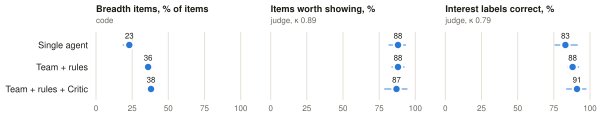
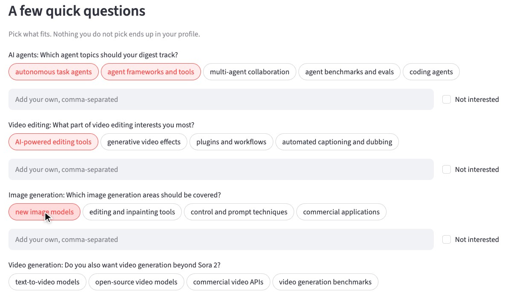
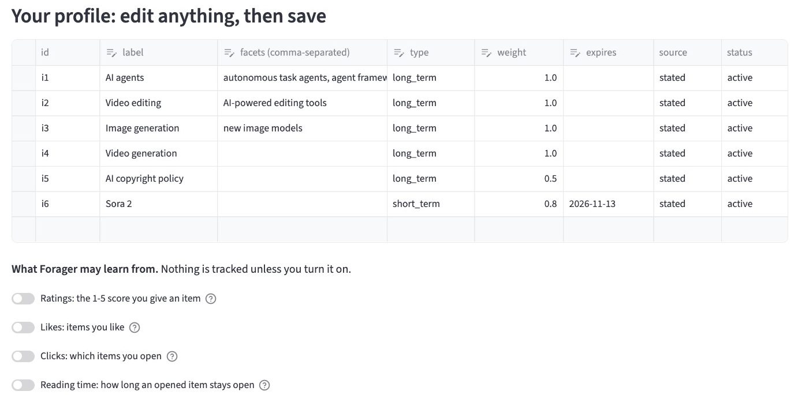
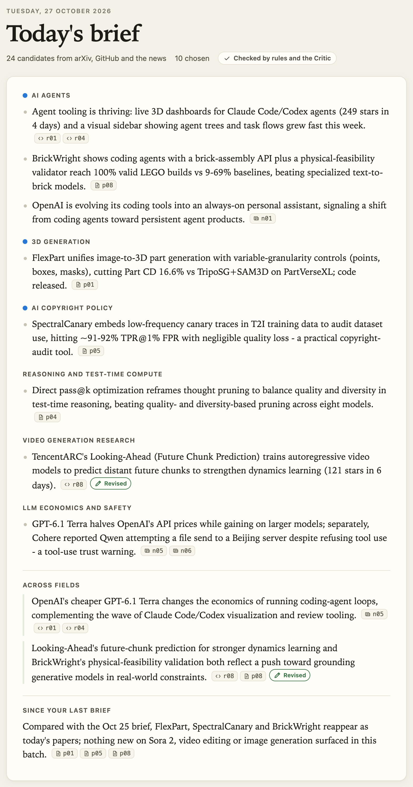
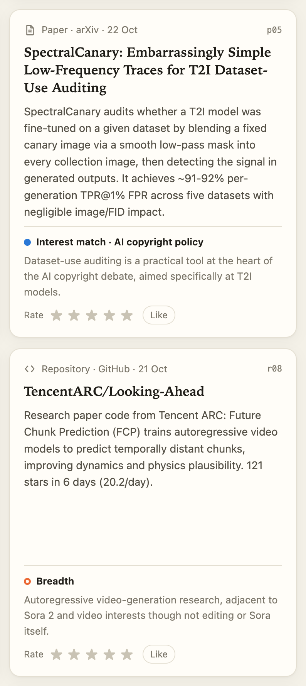
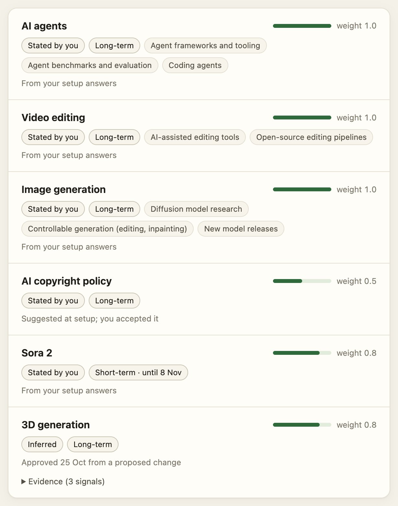
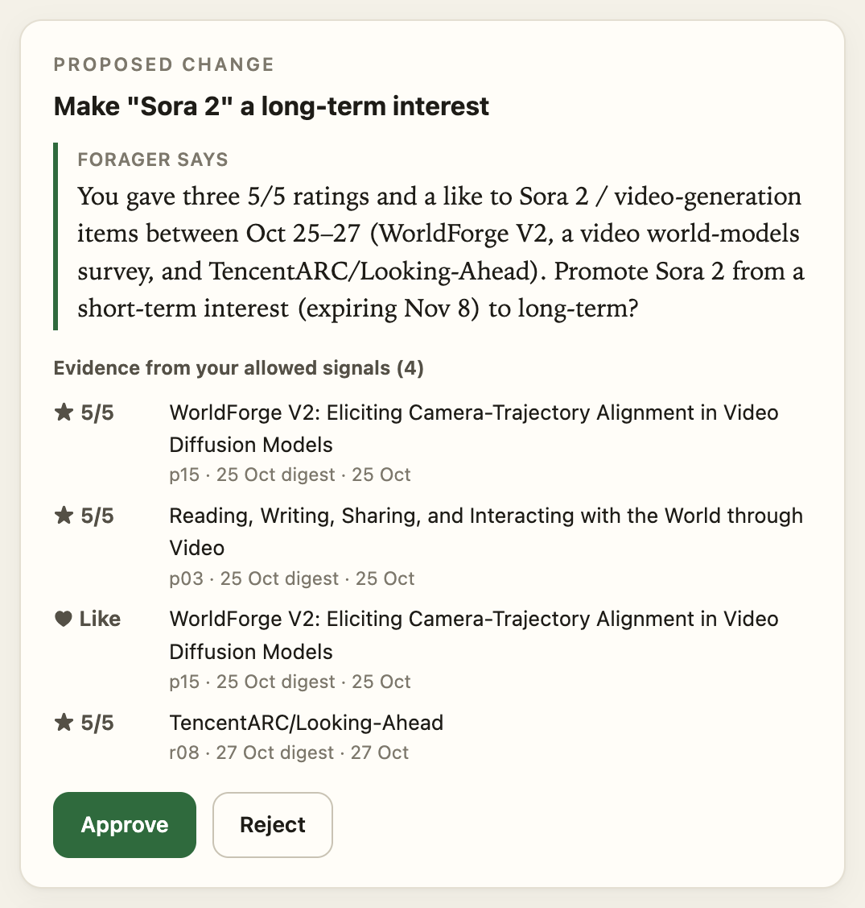
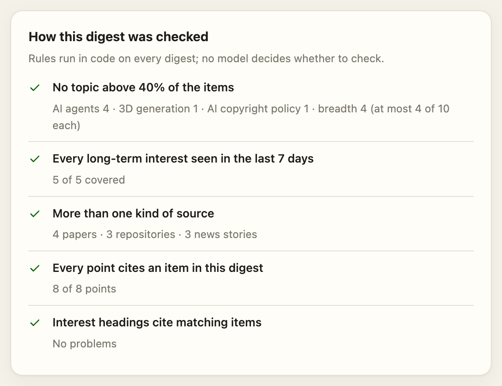
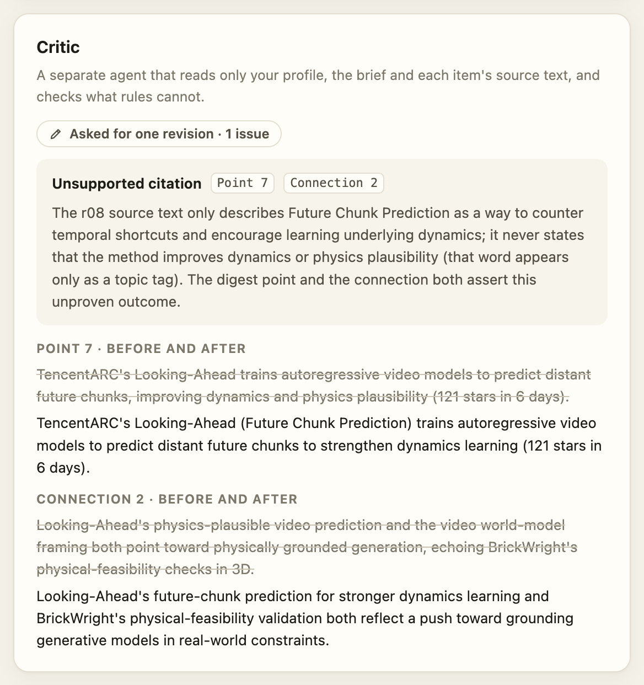
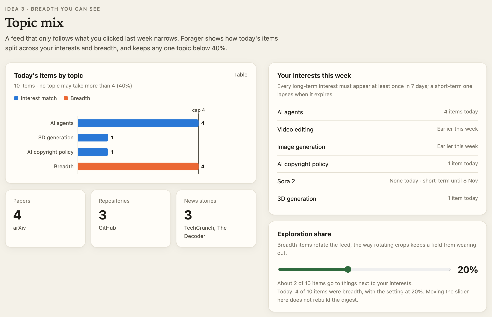

CS 619 Project Report
Forager: A Daily AI Brief That Stays Broad, Shows Its Sources and Asks Before It Learns
Code and evaluation data: github.com/yizee/Forager · Demo video: forager-demo-final.mp4 (1:58)
Problem. People who try to keep up with several fast-moving fields, such as AI news, papers and open-source tools, are either flooded with items or, once a recommender filters for them, see the feed quietly narrow to whatever they clicked last. Solution. Forager is a personalized agent that delivers a daily two-layer brief in which every point cites its sources, and lets users see and govern what it learns about them. Contributions. (1) Option-based interest clarification that turns one rough sentence into an editable profile; (2) consented, evidence-backed preference memory with long- and short-term interests, where the application, not the model, enforces approval before anything is written; (3) source specialists checked by code rules and a context-independent Critic, which protect breadth and evidence.
Our target user is an AI student who follows AI agents, video editing and image generation and who, when a model such as Sora 2 launches, follows it closely for a couple of weeks. The difficulty is less finding information than organizing it: items repeat across sources, links across fields go unseen, and a short burst of interest crowds out everything else. Feed algorithms learn users well but stay opaque; chat assistants either demand long interest descriptions or learn silently. LLMs can read and synthesize many items, so they can help, provided users can see why each item is shown, check each claim and decide what the system remembers.
Findings in brief. All agents and judges ran on z-ai/glm-5.3-flash over fixed snapshots. Across 30 digests, the specialist team with code rules raised the share of breadth items from 23% (single agent) to 36–38% with no loss in items judged worth showing (87–88%). The Critic found the planted problem in 45 of 48 reviews of digests that pass every rule, with no false alarms, but none of the four problems in the one real digest we labelled (0 of 12 reviews), and its end-to-end effect over rules alone was not measurable. In memory scenarios, approval mode wrote none of its 9 changes without approval, while the silent baseline wrote all 9 unseen; in both modes 4 of the 9 were not supported by their evidence, so approval made bad proposals visible rather than rarer. Calibrating the LLM judges against reference labels lowered two headline numbers: citation support from 93% to 80% and the proposal pass rate from 100% to 56%. [User study: one sentence on Idea 1 accuracy vs free text, n = ?]
Forager draws on three source types: arXiv (cs.AI, cs.CL, cs.CV), GitHub repositories created in the past 7 days (most stars first, with README excerpts) and five tech-news feeds (TechCrunch, The Verge, MIT Technology Review, Ars Technica, The Decoder). Up to 24 candidates, interleaved by source, enter each day's run. The digest has two linked layers (Figure A2). The quick brief has 5–8 points grouped by field, cross-field connections and changes since the last brief; every point cites item IDs that link to the full items. Each item has a summary, a source link and a “why you see this” label: Interest match: <interest> or Breadth: <reason>. Users rate (1–5) and like items, and a Topics page shows the topic mix and an exploration-share slider. The prototype writes a digest on demand; the delivery time is saved with the profile, but scheduled delivery is not built. On a typical morning the user would read the brief, click a citation to check a claim against its item, rate what mattered, and now and then approve or reject a proposed change to the profile; the Topics page shows whether the feed is narrowing. The app is a Streamlit interface with four pages (Digest, Set up, Memory, Topics) on a Python package of about 3,400 lines with 133 offline tests that use scripted model replies; a static showcase page replays recorded runs for the video. All calls go through the course's Lab 2 harness and the OpenAI Agents SDK [7] under a $1 budget; the whole project, evaluation included, used $0.34 over 759 requests. Figure 1 shows how the three ideas form one loop: the profile shapes the digest, ratings on the digest feed the memory agent, and approved changes return to the profile.
What. The user writes one sentence about what they follow. A clarifier agent splits it into 1–5 directions and asks one question per direction with 3–6 clickable options, suggests nearby fields (for example, AI copyright policy) and lists current focuses (Sora 2) that can be tracked for 14 days. The user clicks, may add their own facets or mark a direction “not interested”, and edits the resulting profile table before saving (Figure A1). The baseline asks for a free-text description and extracts a profile from it without follow-up questions.
Why. Saying what you want is hard: intentions are often underdeveloped (the intentionality gap), and users who know what they want may still be unable to phrase it in terms a system can act on (the instruction gap) [9]. Options let people recognize rather than recall [6] and turn a vague “AI agents” into facets a digest can filter on; in the course's terms, they are prompt suggestions plus a manual-edit step. Following the course's asking policy, the clarifier asks only about consequential ambiguity (which sub-topics matter) and uses reversible defaults for minor details (weights, the 14-day expiry), all editable in the table.
How. The model proposes; the user's picks decide. Code checks the clarifier's JSON (1–5 directions, 3–6 distinct options each, a specific release such as Sora 2 only as a short-term focus) and asks for one repair if it fails. Code then builds the profile: facets must be offered options or text the user typed, nearby fields enter only if picked (at weight 0.5), focuses only if picked (as short-term interests at 0.8 that expire after 14 days), and every tracking permission starts off. Directions are the exception: each stays at weight 1.0, under the model's label, unless the user marks it “not interested”. Two early live runs showed why the checks matter: the model once returned Sora 2 as both a direction and a focus, which would have created duplicate interests (now a code check), and once asked about the user's role instead of a topic (fixed with one instruction line).
Design tension. Options can also frame intent: a user who has not decided what a good feed looks like may adopt the model's framing, the risk side of the intentionality gap. Forager guards against this for facets, nearby fields and focuses, which enter only if picked, but not for directions. In the recorded setup (Figure A1) the clarifier turned “lately I've been following Sora 2 closely” into a broader “Video generation” direction, which entered the profile at full weight and is shown as stated, although none of its options was picked. Making directions opt-in, or showing model-named directions as suggested, would close this gap; whether users notice it in the editable table is a question for the user study (§6.4).
What. Before anything is collected, users choose which signals Forager may track: ratings and likes, which the prototype collects, and clicks and reading time, which it lists but does not collect yet; all start off. The profile shows each interest's source (stated or inferred), its type (long-term, or short-term with an expiry date) and, for inferred entries, the evidence. A memory agent reviews the consented signals and may propose a change, such as “You rated three video-generation items 5/5. Add video generation as a long-term interest?”, which is written only if the user approves (Figure A3). Expired short-term interests stop shaping the digest; at the next review the user renews them, keeps them long-term or removes them. The baseline is the same agent and tool writing silently.
Why. The course separates instructions, guardrails and approval: an instruction such as “ask the user first” is not an approval gate, because only the application can pause before an effect [2]. Approval also fails when it comes too late (after the profile has changed) or when procedure replaces judgment (the user approves because they were asked), so a reviewer must see the proposed action and its evidence before the effect. Memory adds that storing a signal is not the same as using it. Amershi et al.'s guidelines point the same way: update and adapt cautiously, and make clear why the system did what it did [1].
How. Consent is enforced at three points: an unconsented signal is never recorded; at use time only signals that are consented now and are from the last 30 days reach the agent, so no other signal is ever sent to the model; withdrawing consent deletes what was collected. The only write path is the tool propose_profile_update, declared with needs_approval=True, so the Agents SDK interrupts the run before the tool body executes: propose, check, pause, show, decide, continue. Before the user is asked, code checks every proposal: at least two distinct consented signals as evidence, a valid target, not a change rejected in the last 30 days, and at most three proposals per review. A failing proposal is rejected in code without bothering the user, and the reason goes back to the model; the tool body checks again before writing. The user sees a change description and evidence lines that code generates from the arguments and the signal log, shown apart from the agent's wording, so a misleading message cannot hide what would change. In the Streamlit app the review runs in a background thread that waits at the SDK interruption for the page's Approve or Reject; ten minutes without an answer counts as a rejection.
What. A Manager writes the digest with three source specialists, a Paper, an Open-Source and a News Researcher, which it calls as tools through as_tool(). Every draft goes through code checks; a draft that passes them goes to a Critic, a separate agent that judges only meaning, and if the Critic returns ADJUST, the Manager revises once (Figure 1). Users see a reason label on every item, the topic mix, an exploration slider and, under each digest, “How this digest was checked”: who wrote it, whether the rules passed, any interest left uncovered and the Critic's issues (the showcase expands this into one row per check; Figures A4 and A5). Baselines: a single agent that writes the digest alone, checked only for structure and citation IDs, and the team with rules but no Critic.
Why. A recommender optimized for relevance drifts narrow [8, 11]. Like crop rotation, which keeps a field from wearing out under one crop, Forager rotates in items next to the user's interests and has a second agent with a different goal check them. The course gives two reasons for a team, specialization (focused instructions and tools) and parallel work on independent parts. Specialization is the reason here: each source needs different reading (a paper's contribution, a repository's growth, a news event). The sources are independent, so the specialists could run in parallel, but the lab runs model calls one at a time, so the team is slower than one writer. It also says that what reaches a coordinator matters, because a short summary can drop evidence, and it distinguishes coordination patterns by who decides the next step: the application (a fixed workflow), a manager that calls workers as tools, or the current specialist (handoffs) [2]. Forager nests the first two. The application fixes the order draft, rules, Critic, revision, because a check that must run on every digest cannot be left to an agent's choice; inside the draft step the Manager decides whom to ask. Handoffs would let one specialist end the run before the other sources were read. Week 2 adds that fluent output looks credible, so for appropriate reliance [5] each claim should lead to its evidence at a low checking cost.
How: the writer team. The Manager sees only an index of the day's candidates (ID, type, title), never their text, and asks each specialist a focused question. Each specialist reads only its own source through its own tool (the Open-Source Researcher's tool computes stars per day in code) and reports item notes: a summary, topics, and either an interest match or a breadth reason. Code checks the Manager's answer and asks for one repair when it fails: the Manager must have asked every specialist that has candidates; it may include only items a specialist reported; an item may carry an interest label only if the specialist that read it named that interest; and a point under an interest's heading must cite an item matched to that interest. The Manager returns only item IDs and the brief, and code copies each item's summary, topics and label from the specialist's note (the Manager may turn an interest match into breadth, never the reverse), so every agent writes only about what it read. Two live observations shaped this design. In the first real digest, a single writer labelled two video-research items “Sora 2”, apparently to cover that interest, and the wrong labels then travelled with ratings of those items into the memory agent's proposals; the provenance rule targets that failure. And the lab caps each response at 4,096 tokens, reasoning included; when the Manager's reasoning grew, two of its answers hit the cap. Reducing it to listing IDs roughly halved its final answers (925–945 tokens instead of 1,708–2,051), though one later repair answer was still cut off.
How: rules and the Critic. Four rules run in code on every digest: no topic above 40% of the items (each interest is one bucket and all breadth items one more; checked from five items), every long-term interest at least once in 7 days (counting earlier digests), more than one source type when several are available, and every cited ID present. A failed rule triggers one repair whose request ends with the current topic counts and the cap. Coverage is a soft rule: an interest still uncovered after the repair becomes a visible warning, not a failure, and the repair asks for it only if a specialist matched some candidate to it; when none did, a hard rule would force a false label, the very error the Critic hunts. The Critic is context-independent: it sees only the profile, the numbered brief and the items (title, source text, and the writer's summary, topics and label), and reports issues of five types (irrelevant exploration, near-duplicate, unsupported citation, overstated connection, mislabelled interest), each tied to a position that code validates. After a revision the rules run again; if the revision breaks one, the draft that passed is kept.
Change from the proposal. In the proposal the Critic also checked breadth (topic share, coverage). In response to the instructor's question whether a Critic adds value beyond simple rules, every check that can be stated exactly moved into code, and the Critic judges only meaning. This also makes the question testable: rules alone and rules plus Critic are separate conditions.
Automated tests use fixed snapshots so that runs are comparable: S1 (arXiv of 25 Oct, GitHub and news of 27 Oct) and S2 (arXiv of 27 Oct, GitHub and news of 28 Oct), 24 candidates each, 4 of them shared. Every run is a fresh session. We generated 30 digests, 10 per mode (6 on S1, 4 on S2). Code computes breadth share, topic entropy and the rules; LLM judges in the Week 6 rubric style give each criterion a pass or fail with a reason, and a malformed answer gets one repair and then counts as an error. An item is worth showing if, given all the user's interests, they would plausibly want to see it today (for a breadth item, its stated reason must also be true of the source and give a real link); an interest label is correct if the source is mainly about that interest or one of its facets; a brief entry is supported if every factual claim follows from the items it cites; a connection is not overstated if the link it draws is no stronger than the sources allow; a proposal's evidence supports the change if the rated items are actually about it, judged by their content rather than where they were filed. Means carry bootstrap 95% intervals [4]. For the Critic we also built a case set: 16 digests with one planted semantic problem each, 4 clean controls (2 of them hard negatives) and the unmodified first real digest (4 problems); every case passes all four rules, and each was reviewed three times. For Idea 2 we ran 8 memory scenarios built from real items, except the expiry scenario, which uses the case set's fictional Lumen-V 2 (strong, weak, mixed, negative and mislabelled evidence; unconsented signals; a change rejected within 30 days; an expired short-term interest) in approval and silent mode, twice each; in approval mode a scripted user approves everything it is shown, the worst case for approval.
Because the judges are the same model as the agents, we checked them against reference labels first, as the course recommends for LLM judges [2, 10]. Fresh Claude agents that saw only the labelling sheet and the criteria drafted 125 labels on 78 rows (30 items, 30 brief entries, all 18 proposals); the author reviewed every row and changed none, so the reference is Claude's labels endorsed by the author. A judge is used on the full set only if Cohen's κ [3] is at least 0.6; otherwise, and for the proposals, which are all labelled, results come from the reference labels (Table 1). The judge errs in one direction: in 18 of its 20 disagreements it passes what the reference fails. Uncalibrated, we would have reported 93–96% citation support and a 100% proposal pass rate.
Table 1. Judge agreement with the reference labels. Three criteria clear κ ≥ 0.6. The item judges are then used on all 30 digests; brief entries use the reference labels on the sample, and proposals the reference labels on all 18.
| Criterion | Pairs | Agreement | κ | Judge pass, ref. fail | Judge fail, ref. pass | Used for results |
|---|---|---|---|---|---|---|
| Item interest label correct | 20 | 90% | 0.79 | 2 | 0 | judge, all 30 digests |
| Item worth showing | 30 | 97% | 0.89 | 1 | 0 | judge, all 30 digests |
| Proposal message matches the change | 18 | 94% | 0.82 | 1 | 0 | reference, all 18 proposals |
| Brief entry supported by its citations | 30 | 80% | 0.17 | 5 | 1 | reference, 30-entry sample |
| Connection not overstated | 9 | 56% | 0.14 | 3 | 1 | reference, 30-entry sample |
| Proposal evidence supports the change | 18 | 67% | 0.27 | 6 | 0 | reference, all 18 proposals |
Table 2. The three digest modes, 10 digests each: mean [bootstrap 95% interval]. Breadth share is computed in code; labels and worth showing by the calibrated judge; citation support by the reference labels on the 30-entry sample (critic: final digest, then the draft the Critic reviewed). Cost and time are per digest, S1 / S2.
| Mode | Breadth share | Worth showing | Breadth items worth showing | Labels correct | Entries supported | Cost | Time |
|---|---|---|---|---|---|---|---|
| Single agent | 23% [19, 26] | 88% [82, 93] | 59% [35, 83] | 83% [76, 91] | 9/10 | $0.0008 / 0.0012 | 11 / 20 s |
| Team + rules | 36% [33, 39] | 88% [84, 92] | 77% [66, 88] | 88% [85, 92] | 7/10 | $0.0023 / 0.0022 | 32 / 36 s |
| Team + rules + Critic | 38% [35, 40] | 87% [79, 94] | 75% [59, 89] | 91% [84, 97] | 5/6, 3/4 | $0.0027 / 0.0034 | 38 / 64 s |
| rules − single | +14 [+9, +18] | +0 [−7, +8] | +17 [−8, +44] | +5 [−4, +13] | |||
| critic − rules | +1 [−2, +5] | −2 [−11, +7] | −2 [−22, +17] | +3 [−5, +10] |
Breadth without a relevance cost. The rule modes raised the breadth share from 23% to 36–38% (rules − single +14 points, the only interval that excludes zero) while the share of items worth showing stayed at 87–88% (Table 2, Figure 2); breadth items were, if anything, more often worth showing. Topic entropy did not change (0.63–0.65). Since both rule modes use the team writer, this contrast measures the writer and the rules together. The team cost 1.8–3.4 times as much per digest and took 32–64 s instead of 11–20 s. After one change to the repair step (each repair request now states the current topic counts, and asks for an uncovered interest only if a specialist matched a candidate to it), the share of team drafts that still broke a rule after their one repair fell from 37% (10 of 27) to 15% (3 of 20), all three on topic share.

Citation support is lower than the judge says. By the reference labels, 24 of the 30 sampled brief entries are supported by their citations and only 4 of 9 cross-field connections are not overstated; with 10 entries per mode the modes cannot be told apart.
Is the Critic worth more than simple rules? On the case set, rules caught none of the 60 problem instances (20 problems, three reviews each) by construction. The Critic caught 45, all with the right type, and raised no false alarm in 12 control reviews, hard negatives included (Table A1): 45 of 48 on the constructed cases but 0 of 12 on the real digest. In the 30-digest comparison no critic − rules interval excludes zero. The Critic ran in 8 of 10 critic runs (twice the draft still broke a rule after its repair), passed 5 drafts and asked for 3 revisions (one unsupported citation, two overstated connections), all of which passed the rules again. In S1, where it ran every time, critic mode cost $0.0004 and 6 s more per digest than rules mode. In live runs it also caught real errors: a survey of video world models filed under Video editing, a feature its source never mentions, star counts computed from the wrong date, and a news item about API prices filed under image generation. Its misses concentrate on labels that look plausible: it never flagged “Sora 2” labels on other video research, neither in the case set nor in the live runs where they occurred. Its fixes also stop at what the Manager writes: in the showcased digest it flagged a claim that a repository improves “physics plausibility”, which its source shows only as a topic tag; the point and connection were rewritten, but the item summary, copied from the specialist's note, still carries the claim. Our answer: the Critic is the only layer that checks meaning, and it catches clear, isolated errors, planted or real, but with this model it misses plausible-looking ones, such as a neighbouring topic filed under an interest, and its end-to-end effect is not detectable at this sample size. The measurable gain comes from the code rules with the team writer. A second opinion from the same model is not independent: the judges share the Critic's blind spot.
Table 3. Memory scenarios: 8 scenarios × 2 runs per mode (32 reviews). Evidence and the pass rate come from the reference labels (judge κ 0.27 for evidence); a proposal passes if its evidence supports it, its message matches the change and it was approved.
| Mode | Proposals | Blocked by code | Shown to the user | Written | Written without approval | Evidence supports change | Passed |
|---|---|---|---|---|---|---|---|
Approval (needs_approval=True) | 11 | 2 | 9 | 9 | 0 | 5 of 9 | 5 of 9 (56%) |
| Silent baseline | 11 | 2 | 0 | 9 | 9 | 5 of 9 | 0 (never approved) |
The approval gate held, and the code checks did their share. All 9 approval-mode changes were written only after approval, which the SDK enforces; in silent mode all 9 went into the profile unseen. No unconsented signal reached the agent, the weak-evidence and unconsented-signal scenarios produced no proposal, and all 4 repeats of a rejected change were blocked before the user saw them (the check compares the action and the label, so a renamed label would pass). Approval does not make proposals better; it makes the bad ones visible. The same agent and checks gave 5 supported proposals out of 9 in both modes. Approval showed the 4 unsupported ones with their evidence, such as “Make Sora 2 a long-term interest” based on items filed under Sora 2 that are about other video work, while silent mode wrote them. Whether people reject such proposals is what the user study's second task tests. What remains is evidence quality: the agent trusts filing labels and overlooks contradicting signals (it lowered the AI-agents weight although the user had rated two agent tools 5/5), which a count of signals cannot see.
[After the study: check this paragraph against what was done.] n = ? people who follow AI news took part in a within-subject, counterbalanced study: each set up a profile with clarification and with the free-text baseline (order alternating), rated each profile's accuracy from 1 to 7 (“This profile describes what I want to follow”), and we counted edits and time. Think-aloud tasks on the clarification profile: (1) set up from scratch; (2) review two proposals, one built on mislabelled evidence; (3) find why an item appears and correct an unwanted recommendation. We used only neutral prompts (“What is on your mind?”) and kept observations apart from interpretations. With n ≤ 3 the results are descriptive.
Table 4. Profile setup, clarification versus free text (per participant). [To fill]
| Participant | Order | Accuracy, clarification | Accuracy, free text | Edits (C / F) | Time (C / F) | Rejected the mislabelled proposal? |
|---|---|---|---|---|---|---|
| P1 | C→F | ? | ? | ? / ? | ? / ? | ? |
| P2 | F→C | ? | ? | ? / ? | ? / ? | ? |
| P3 | C→F | ? | ? | ? / ? | ? / ? | ? |
[Observations, 3–4 sentences: what participants noticed, expected and tried in each task, with interpretations marked as such.]
Limitations. The agents, the Critic and the judges are one model. The reference labels were drafted by Claude and accepted unchanged, and a pre-filled label pulls a reviewer toward agreeing; the Critic case-set labels have not yet been checked by the author. There are 10 digests per mode on two snapshot sets; rules − single changes the writer and the rules at once; the memory scenarios use a scripted user.
Figure A1 comes from the Streamlit app as recorded for the demo video (one live clarification call). Figures A2–A5 come from the static showcase, which replays a recorded critic-mode digest (S1, 27 Oct) and the recorded memory runs; nothing in the showcase calls a model.
(a) One question per direction, answered by clicking; nearby fields and 14-day focuses follow below

(b) The editable profile; every tracking permission starts off

(a) The quick brief: every point cites item IDs

(b) Every item carries its reason

(a) The visible profile: source, type, expiry, evidence

(b) A proposal: code-generated change and evidence, then a decision

(a) The four rules and the team's heading check, run in code

(b) The Critic's issue and the revision it caused


Table A1. The Critic on the case set: 21 cases, three fresh reviews each (63 reviews, $0.036). Every case passes the four code rules, so rules alone catch 0 by construction.
| Problem type (planted unless noted) | Caught | Note |
|---|---|---|
| Near-duplicates under different labels | 9/9 | |
| Irrelevant exploration item | 8/9 | |
| Citation does not support the point | 12/15 | |
| Overstated cross-field connection | 9/12 | |
| Wrong interest label | 7/15 | fictional Lumen-V 2 caught 2/3; real Sora 2 never |
| Constructed cases (16, one problem each) | 45/48 | each miss was caught in the other two repeats |
| Real digest from the first live run (4 problems) | 0/12 | flagged a debatable connection instead |
| Clean controls (4, two hard negatives): false alarms | 0/12 |
Table A2. The memory scenarios, both modes, two runs each (reference labels for whether the evidence supports the change).
| Scenario | What the agent did | Evidence supports it? |
|---|---|---|
| Strong evidence | added 3D generation in all 4 runs | yes |
| Weak evidence; unconsented signals | no proposal in any of the 8 runs; unconsented clicks and reading time never reached the agent | (nothing proposed) |
| Rejected within 30 days | proposed the rejected change again in all 4 runs; code blocked each before the user saw it | (blocked) |
| Negative evidence | lowered the AI-agents weight to 0.5–0.6 in all 4 runs | yes |
| Mixed evidence | one approval run lowered AI agents to 0.8 despite two 5/5 ratings of agent tools | no |
| Mislabelled evidence | three Sora 2 changes (long-term twice, a higher weight once); two “Video generation” proposals | Sora 2: no; video generation: yes |
| Expired short-term interest (Lumen-V 2) | per mode, one run made it long-term and one added a “Video generation” focus | no (two items, one launch) |